Informacion del Sistema o Pruebas PC
Algunos de los programas o comandos que mostramos a continuación son más que nada para ayudar con algunas necesidades que se presenten.
Nos puede recomendar algunos programas para subir a nuestra WEB o si encuentra algún problema con algunos links o comandos le agradecemos informar para mantener esta página activa. igual todos los comandos y los link fueron actualizados el 22-05-2022.
Sistema Operativo:
Arquitectura:
3DMark
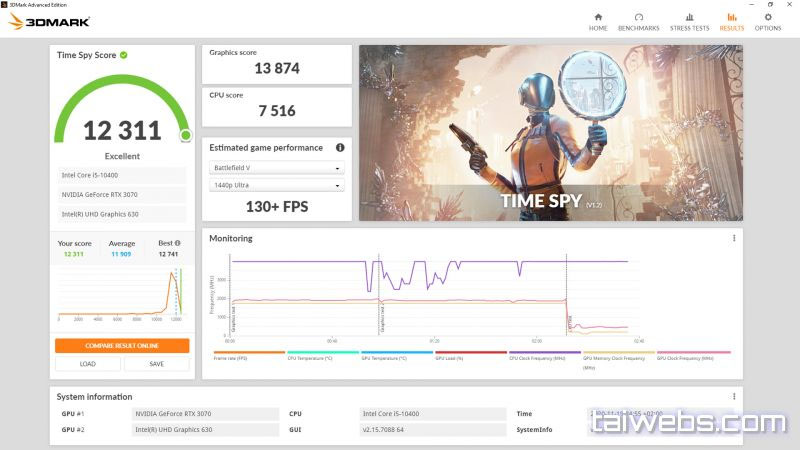3DMark es un programa que habrás visto en numerosas reviews de componentes, portátiles o incluso móviles. Sirve para hacer benchmarking, o en otras palabras, llevar a los límites a un dispositivo para registrar su rendimiento máximo posible. Esto lo realiza mediante un recorrido virtual programado y medido al milímetro para forzar a los dispositivos de prueba a trabajar a máximo rendimiento. Por lo general, en dicho recorrido, tu ordenador, dispositivo u otro creará todos los modelos, reflejos y físicas en tiempo real. Por ello, a medida que se va sucediendo la prueba puedes predecir según sus fotogramas por segundo cómo va a acabar.
Archivos Para descargar
| Archivos | Servidores | ||
|---|---|---|---|
| 3DMark | Mega | WEB Oficial | |
AIDA64
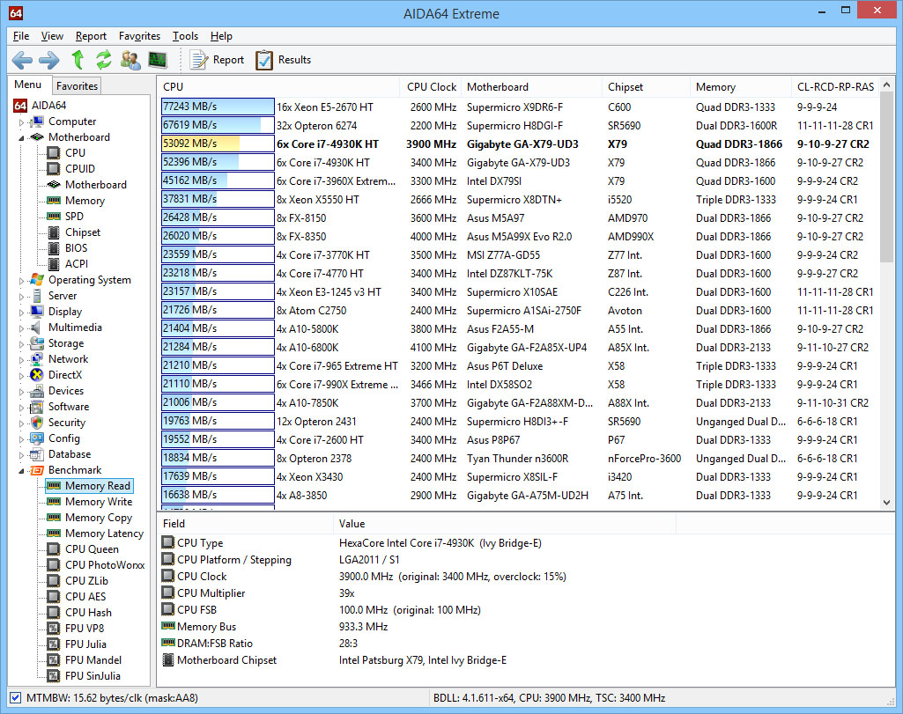AIDA64 es un programa informático de análisis, auditoría e información del sistema desarrollado por FinalWire Ltd (una compañía Húngara) que funciona bajo los sistemas operativos Windows, Android, iOS, Windows Phone, Tizen, Chrome OS and Sailfish OS. Muestra información detallada sobre los componentes de un ordenador. La información se puede guardar en un archivo en formatos como HTML, CSV o XML.
Archivos Para descargar
| Archivos | Servidores | ||
|---|---|---|---|
| AIDA64 | Mega | WEB Oficial | |
CINEBENCH
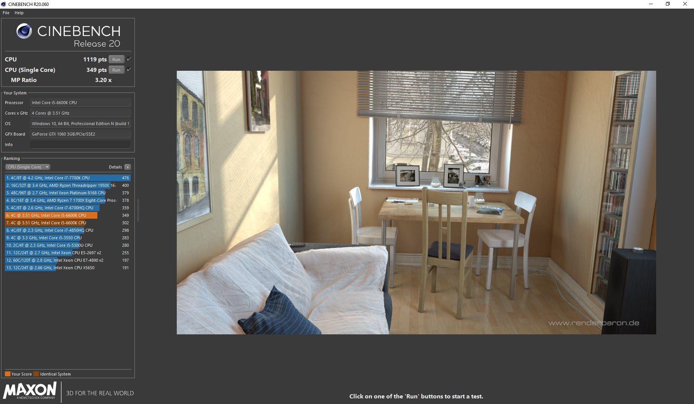Cinebench es un conjunto de pruebas multiplataforma del mundo real que evalúa las capacidades de hardware de su computadora. Las mejoras en la versión de Cinebench reflejan los avances generales en la CPU y la tecnología de renderizado en los últimos años, proporcionando una medición más precisa de la capacidad de Cinema 4D para aprovechar los múltiples núcleos de CPU y las características modernas del procesador disponibles para el usuario promedio. Lo mejor de todo, es gratis.
Archivos Para descargar
| Archivos | Servidores | ||
|---|---|---|---|
| CINEBENCH | Mega | WEB Oficial | |
Core Temp
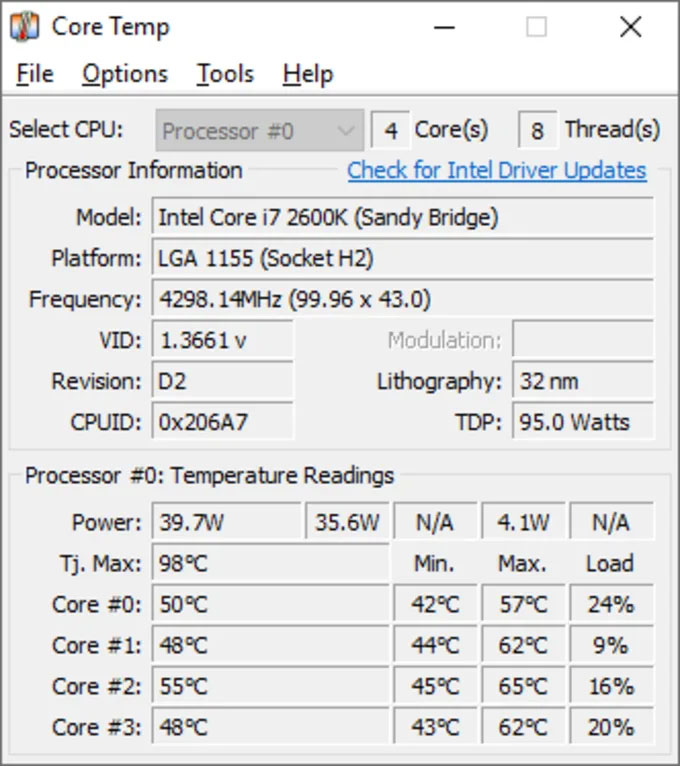Core Temp es un programa compacto, sin complicaciones, de tamaño reducido pero potente para monitorear la temperatura del procesador y otra información vital. Lo que hace que Core Temp sea único es la forma en que funciona. ¡Es capaz de mostrar la temperatura de cada núcleo individual de cada procesador en su sistema! Puede ver las fluctuaciones de temperatura en tiempo real con diferentes cargas de trabajo. Core Temp también es independiente de la placa base.
Archivos Para descargar
| Archivos | Servidores | ||
|---|---|---|---|
| Core Temp | Mega | WEB Oficial | |
CPUID HWMonitor
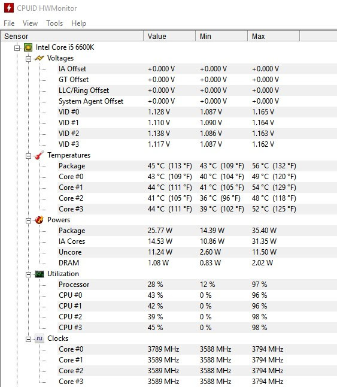CPUID HWMonitor es un software capaz de monitorear diferentes parámetros de nuestro equipo. Fue creado por el mismo equipo tras CPU-Z, es decir, CPUID, así que ya puedes hacerte una idea de cómo puede ser el programa. Si bien no es el programa más completo que podemos adquirir, sí tenemos que darle el mérito a ser el primer programa que simplificó el estándar. La presentación de los datos y el análisis del equipo está muy centrada en que sea sencillo leerlo para el usuario y es algo de agradecer.
Archivos Para descargar
| Archivos | Servidores | |
|---|---|---|
| CPUID HWMonitor | Mega | |
CPU-Z
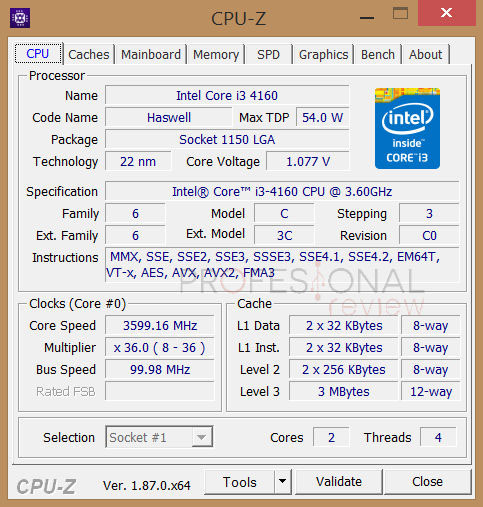CPU-Z es un software freeware, disponible Windows y Android; brindándonos información detallada del procesador, chipset de sistema y el chipset de video entre otros que está instalado en la Computadora Personal. El programa contiene seis fichas que nos informa.
Archivos Para descargar
| Archivos | Servidores | ||
|---|---|---|---|
| CPU-Z | Mega | WEB Oficial | |
CrystalDiskInfo
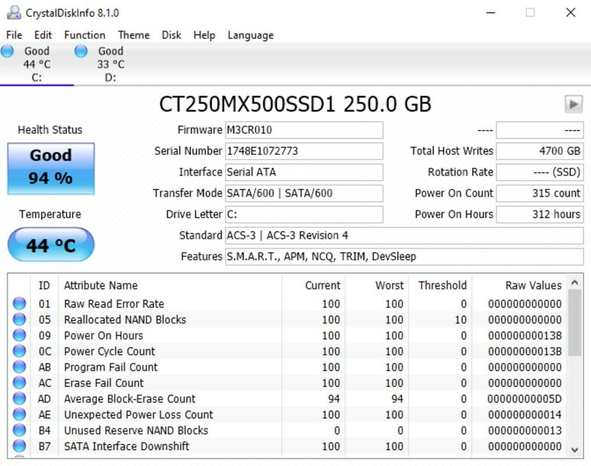CrystalDiskInfo es una aplicación diseñada para ayudarte a mantener con buena salud el disco duro de tu PC. El programa, con soporte para tecnología S.M.A.R.T., te ayuda a detectar y prevenir futuros errores en la superficie del disco, de forma que puedas tomar las medidas necesarias a tiempo antes de que la pérdida de datos sea irreemplazable. CrystalDiskInfo te muestra en su interfaz todo tipo de información detallada acerca del disco duro, desde la marca y el modelo al tamaño de buffer y caché, el número de serie, o incluso el firmware que utiliza.
Archivos Para descargar
| Archivos | Servidores | ||
|---|---|---|---|
| CrystalDiskInfo | Mega | WEB Oficial | |
HWiNFO
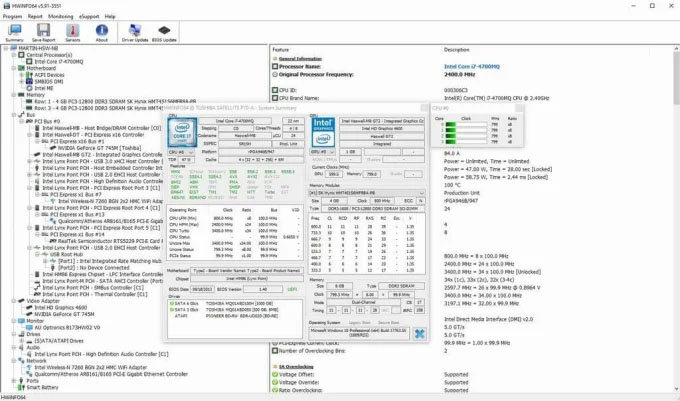El programa HWiNFO es uno de los programas gratuitos destinados a la monitorización de componentes de nuestro PC más completos y configurables, que podemos encontrar ahora mismo en Internet. Este programa, no solo nos puede dar una visión somera del hardware que tenemos instalado dentro de nuestra caja. Sino que, más importante, es capaz de leer todos los sensores de los componentes que tenemos instalados, permitiendo incluso una representación gráfica de estos mismos, para conocer los valores en los que se mueven.
Archivos Para descargar
| Archivos | Servidores | ||
|---|---|---|---|
| HWiNFO | Mega | WEB Oficial | |
MemTest64
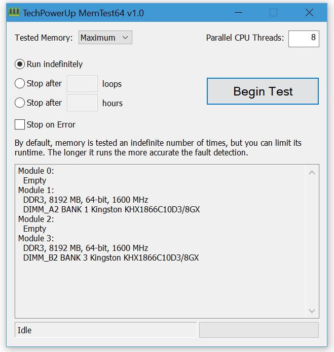TechPowerUp Memtest64 es una utilidad independiente, liviana y gratuita que le permite verificar la memoria de su sistema en busca de problemas a nivel de hardware. Tiene una interfaz gráfica y se puede ejecutar desde Windows. Los errores de hardware de la memoria pueden causar fallas importantes en las aplicaciones, pantallas azules de la muerte (BSOD) y corrupción de datos. Se debe a un hardware defectuoso o a tiempos/frecuencia de memoria incorrectos. Memtest64 le permite probar su memoria sin tener que sacar un disco de arranque de MS-DOS. La utilidad carga su memoria física con patrones de prueba y puede insertar otras aplicaciones en el archivo de paginación para liberar memoria para la prueba. También puede ser útil para los overclockers que buscan maximizar el rendimiento de la memoria jugando con tiempos y velocidades de DRAM.
Archivos Para descargar
| Archivos | Servidores | |
|---|---|---|
| MemTest64 | Mega | |
PassMark Performance Test
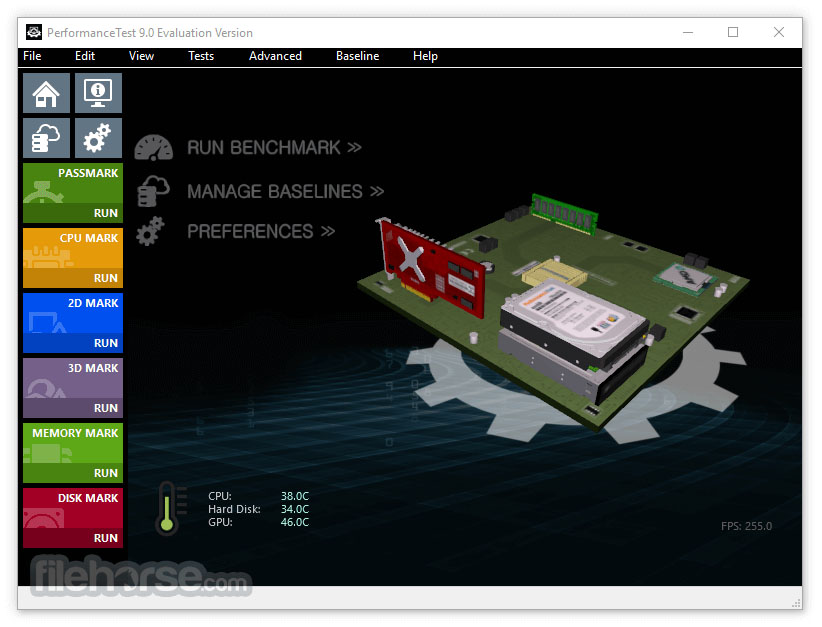PassMark BurnInTest es un programa que aglutina hasta 11 tests diferentes que se pueden correr de manera simultánea o por separado. Esto es una gran ventaja para el usuario, dado que así tiene centralizado todos los tests que desee, en un único programa. Los tests que incluye PassMark BurnInTest son: CPU.
Archivos Para descargar
| Archivos | Servidores | ||
|---|---|---|---|
| PassMark Performance Test | Mega | WEB Oficial | |
PCMark 10
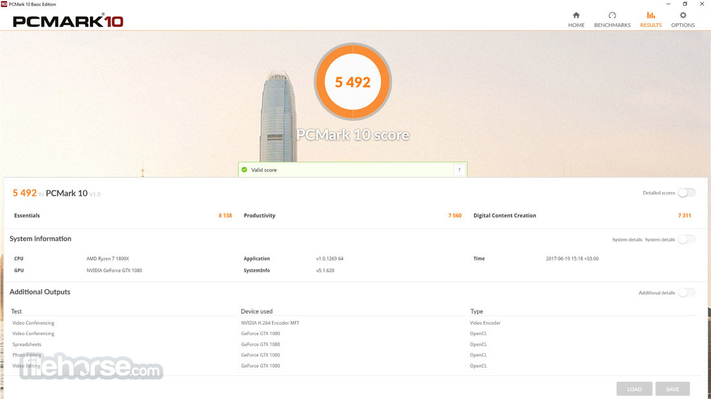PCMark es una herramienta informática de referencia desarrollada por UL para probar el rendimiento de una PC a nivel de sistema y componente. En la mayoría de los casos, las pruebas en PCMark están diseñadas para representar las cargas de trabajo típicas de los usuarios domésticos.
Archivos Para descargar
| Archivos | Servidores | ||
|---|---|---|---|
| PCMark 10 | Mega | WEB Oficial | |
Prime95
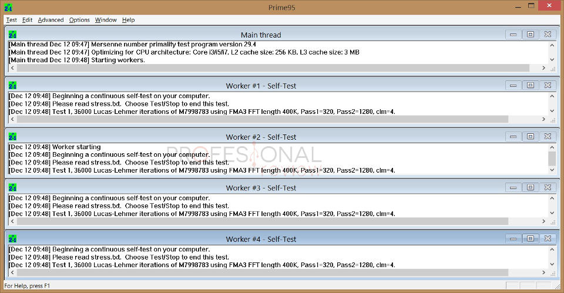Prime95, también distribuida como la utilidad de línea de comandos mprime para FreeBSD y Linux, es una aplicación gratuita escrita por George Woltman. Es el cliente oficial de Great Internet Mersenne Prime Search, un proyecto de computación distribuida dedicado a la búsqueda de primos de Mersenne.
Archivos Para descargar
| Archivos | Servidores | |
|---|---|---|
| Prime95 | Mega | |
RealTemp
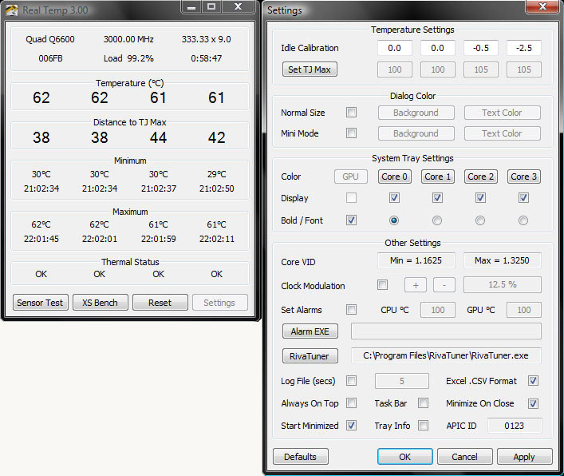Real Temp monitoriza la temperatura del procesador a fin de prevenir fallos. Cada procesador tiene un sensor térmico que informa de la termperatura a la que está trabajando. Cuando se alcanza determinada temperatura, el procesador no trabaja a la velocidad adecuada0
Archivos Para descargar
| Archivos | Servidores | |
|---|---|---|
| RealTemp | Mega | |
Monitor 11
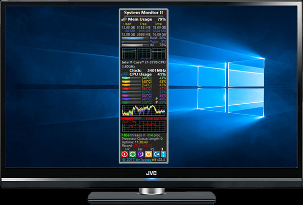System Monitor II es un gadget muy útil que proporciona una descripción general rápida de su sistema, brindando un montón de detalles útiles directamente en el escritorio. Dado que es un gadget, solo se puede acceder a System Monitor II desde el escritorio, pero aun así, proporciona información vital de una manera mucho más atractiva que muchas otras utilidades independientes.
Archivos Para descargar
| Archivos | Servidores | |
|---|---|---|
| Monitor 11 | Mega | |
Speccy
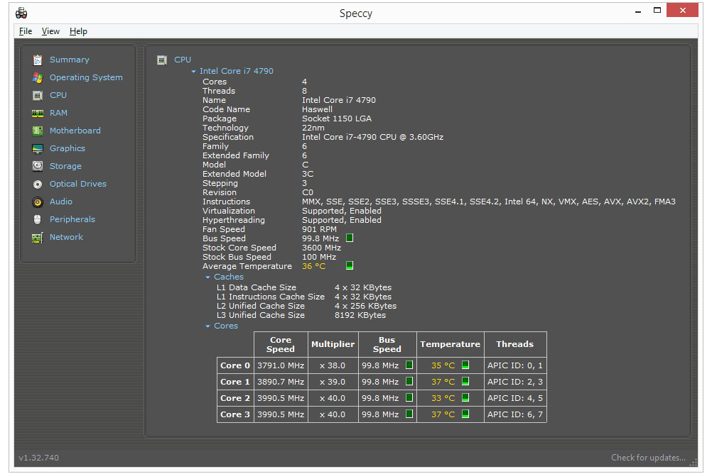Speccy es un software de utilidad gratuito el cual le muestra al usuario especificaciones acerca del hardware y el software de su equipo.
| Archivos | Servidores | ||
|---|---|---|---|
| Speccy | Mega | WEB Oficial | |
CMD RAM
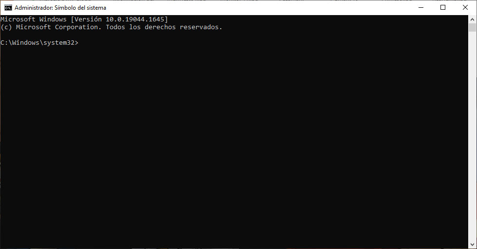Con la simbología del sistema CMD podemos obtener información de nuestra memoria RAM como capacidad, tipo de RAM, cuanto soporta muestra placa base
- Como saber el tipo de memoria RAM (DDR2, DDR3...) instalada en nuestro ordenador desde línea de comandos con este comando:
- Primero abrimos una consola CMD y ingresamos el siguiente comando
- Nos devolverá una línea similar a esta: 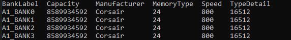
- Debemos fijarnos en el valor de MemoryType, que muestra un número que indica el tipo de RAM:
- 20: DDR
- 21: DDR2
- 22: DDR2 FB-DIMM
- 24: DDR3
- 26: DDR4
- Para DDR4 y superior, es posible que deba usar el
SMBIOSMemoryType, ya que la MemoryTypecolumna muestra 0. - Otra información que nos devuelve el comando:
- BankLabel: Ranura de la placa base donde está conectado el módulo de RAM.
- Capacity: Cantidad de RAM en bytes.
- Manufacturer: Fabricante de la memoria.
- Speed: Velocidad.
- TypeDetail: Tipo de memoria.
- memoria RAM admite y soporta tu PC
- Esta instrucción estará indicando la capacidad máxima que soporta el equipo, en el ejemplo que abajo se refiere indica 32GB como la capacidad máxima y cuenta con 4 slots para instalar memoria.
- Por otra parte podemos obtener información de administrador de tareas de Windows lo buscamos en inicio 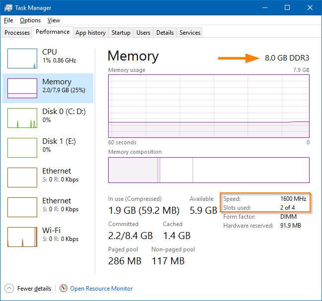
- Esta pestaña enumera la memoria disponible y utilizada junto con la información del chip de memoria, como la capacidad del módulo, la velocidad, el tipo y la cantidad de ranuras disponibles.
wmic MemoryChip get BankLabel, Capacity, MemoryType, TypeDetail, Speed, Manufacturer
wmic memphysical get maxcapacity, memorydevices
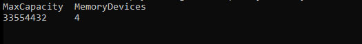
Verificar el estado de la Bateria
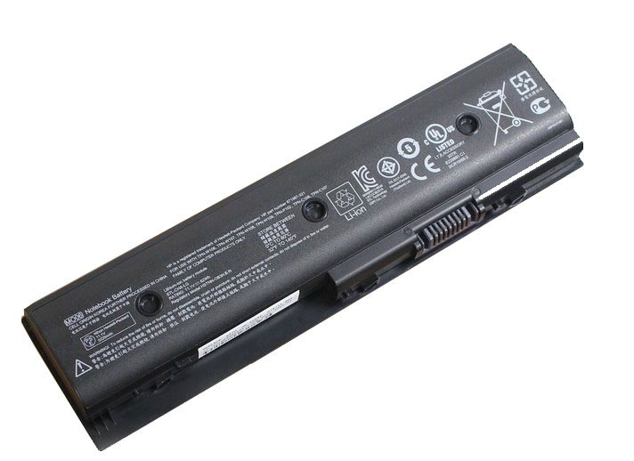Con estas prueba podemos verificar el estado de la batería de nuestro portátil para saber si ya es necesario cambiar por una nueva. Más allá de solo ajustar la configuración de administración de energía, puede generar algunos informes HTML sofisticados en Windows 7, 8 y 10.
- Buscamos en incio windows powerShelly lo ejecutamos como (Administrador)
- ejecutamos el comando
- Esperar los 60 segundo aprox
- al mostrar las lista de errores si tenemos las de 4 errores el estado de la bateri es mala hay que cambiarla
powercfg -energy
C:\Windows\system32\energy-report.html
- Metodo para un Informe html
- Lo primero que debes hacer es pulsar Windows + X.
- En la pestaña emergente haz clic en Windows PowerShell (Administrador).
- En la ventana de comandos escribe lo siguiente:
- Y listo tendremos un informe del estado de nuestra Batería
- Para abrir el archivo más rápido podemos ejecutar Windows + R.
- y colocamos la ruta donde se creó el archivo
powercfg /batteryreport /output C:\battery-report.html
C:\battery-report.html